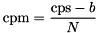
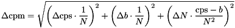

This plugin implements a 2D/3D diffusion model including anomalous diffusion and up to two non-fluorescent components (e.g. triplet state dynamics) for the fitting routines in QuickFit 3. The model may be denoted as:
$$bmath:G(\tau)=G_\infty+\frac{1}{N}\cdot X_{back}\cdot\left(\frac{1-\Theta_{non}+\Theta_{non}\mathrm{e}^{-\tau/\tau_{non}}-\Theta_{trip}+\Theta_{trip}\mathrm{e}^{-\tau/\tau_{trip}}}{1-\Theta_{non}-\Theta_{trip}}\right)\cdot\left[(1-\rho_2-\rho_3)\cdot g_1(\tau)+\rho_2\cdot g_2(\tau)+\rho_3\cdot g_3(\tau)\right]$$with different choices for $$math:g_i(\tau)$$ (depending in the user settings):
$$bmath:g_i(\tau)=\left(1+\left(\frac{\tau}{\tau_{diff,i}}\right)^{\alpha_i}\right)^{-1}\cdot\left(1+\frac{\tau}{\gamma^2}\cdot\left(\frac{\tau}{\tau_{diff,i}}\right)^{\alpha_i}\right)^{-1/2}$$
$$bmath:g_i(\tau)=\left(1+\left(\frac{\tau}{\tau_{diff,i}}\right)^{\alpha_i}\right)^{-1}$$
$$bmath:g_i(\tau)=\left(1+\left(\frac{\tau}{\tau_{diff,i}}\right)^{\alpha_i}\right)^{-1/2}\cdot\left(1+\frac{\tau}{\gamma^2}\cdot\left(\frac{\tau}{\tau_{diff,i}}\right)^{\alpha_i}\right)^{-1/2}$$
For the normal diffusion variants: simply fix $$math:\alpha_i=1$$.
The parameters are:
This model also calculates the diffusion coefficient, if the width $$math:w_{xy}$$ of the laser focus (xy plane) is known, as:
$$bmath:D=\frac{w_{xy}^2}{4\tau_D}$$
where $$math:\tau_D$$ is the diffusion time. Also the effective focal volume $$math:V_{eff}$$ is calculated:
$$bmath:V_{eff}=\pi^{3/2}\cdot\gamma\cdot w_{xy}^3$$
Given this focal volume, the plugin may also calculate the particle concentration in the sample:
$$bmath:C=\frac{N}{V_{eff}}$$
Given the count rate cps and the background count rate b, we can calculate the counts per molecule:

The plugin also calculates some parameter errors:
$$bmath:\Delta \left(\frac{1}{N}\right)=\left|\frac{\Delta N}{N^2}\right|$$
$$bmath:\Delta D=\sqrt{\left(\Delta w_{xy}\cdot\frac{w_{xy}}{2\tau_D}\right)^2+\left(\Delta \tau_D\cdot\frac{w_{xy}^2}{4\tau_D^2}\right)^2}$$
$$bmath:\Delta V_{eff}=\sqrt{\left(\Delta\gamma\cdot\pi^{3/2}\cdot w_{xy}^3\right)^2+\left(\Delta w_{xy}\cdot 3\pi^{3/2}\cdot \gamma\cdot w_{xy}^2\right)^2}$$
$$bmath:\Delta C=\sqrt{\left(\frac{\Delta N}{\pi^{3/2}\cdot\gamma\cdot w_{xy}^{3}}\right)^2+\left(\Delta\gamma\cdot\frac{N}{\pi^{3/2}\cdot w{xy}^3\cdot\gamma^2}\right)^2+\left(\Delta w_{xy}\cdot\frac{3\cdot N}{\pi^{3/2}\cdot\gamma\cdot w_{xy}^4}\right)^2}$$
